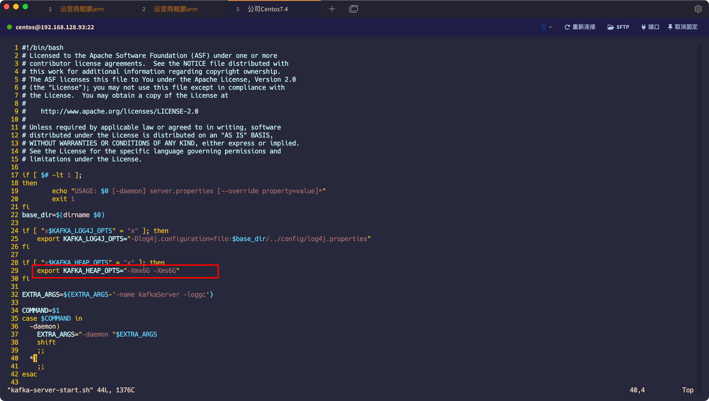

目录
环境搭建机器配置
3台机器默认都是 java 1.8.0_321
3台服务器配置如下：( 练手不需要这么高的配置，我只是刚好有 : )
IP OS CPU MEM 192.168.128.93 CentOS 7.9 8C/8T Intel(R) Xeon(R) Silver 4110 CPU @ 2.10GHz 虚拟机 16G 10.54.0.28 CentOS 7.9 32C/64T Intel(R) Xeon(R) Silver 4314 CPU @ 2.40GHz 物理机 256G 10.54.0.32 CentOS 7.9 32C/64T Intel(R) Xeon(R) Silver 4314 CPU @ 2.40GHz 物理机 256G
xsync与rsync文件分发
rsync 简介
rsync 是一个常用的 Linux 应用程序，用于文件同步。
它可以在本地计算机与远程计算机之间，或者两个本地目录之间同步文件（但不支持两台远程计算机之间的同步）。它也可以当作文件复制工具，替代cp和mv命令。
它名称里面的r指的是 remote，rsync 其实就是”远程同步”（remote sync）的意思。与其他文件传输工具（如 FTP 或 scp）不同，rsync 的最大特点是会检查发送方和接收方已有的文件，仅传输有变动的部分（默认规则是文件大小或修改时间有变动）。
rsync的基本用法详见 附录 1.rsync基本用法
rsync 安装
在使用 xsync 之前，需要先安装 rsync，因为 xsync 是对 rsync 的二次封装
1 | # Debian |
xsync 简介
在集群机器配置时，经常需要将一个文件或目录copy到同样的多台集群上，如果一个一个机器去复制，比较麻烦。如果有一个办法，通过一条命令就可以实现这个目的，就简单多了。xsync就是这样一个同步脚本。xsync其实是对rsync脚本的二次封装，脚本内容可以根据自己需要进行修改。
xsync 基本使用
配置集群 hostname
1.1 修改主机名称，配置 hostname 文件
我们需要将这3台机器依次修改服务器名称
方法1：（需要 reboot 重启）
1
echo hostname1 > /etc/hostname
方法2：（ reboot 重启后会失效）个人使用的是方法2，因为懒。但推荐永久修改方案
1
2
3
4
5
6
7
8
9# 修改192.168.128.93
[root@kafka93 data]# hostnamectl hostname kafka93
[root@kafka93 data]# bash
# 修改10.54.0.28
[root@kafka28 data]# hostnamectl hostname kafka28
[root@kafka28 data]# bash
# 修改10.54.0.32
[root@kafka29 data]# hostnamectl hostname kafka29
[root@kafka29 data]# bash1.2 配置 hosts 文件
修改完 hostname后，将集群名称写入到 192.168.128.93 /etc/hosts 文件中（我将使用93这台机器做文件分发），以后登录不同机器，直接使用 hostname 而不用 IP。
vim /etc/hosts1
2
3192.168.128.93 kafka93
10.54.0.28 kafka28
10.54.0.32 kafka29配置免密登录
2.1 生成 rsa 密钥
使用命令
ssh-keygen生成rsa密钥，配置信息直接回车即可, 生成的密钥默认在当前用户主目录的.ssh目录下密钥文件有两个：
- id_rsa 存放着私钥
- id_rsa.pub 存放着公钥
1
2
3
4
5
6
7
8
9
10
11
12
13
14
15
16
17
18
19
20
21[root@kafka28 ~]# ssh-keygen
Generating public/private rsa key pair.
Enter file in which to save the key (/root/.ssh/id_rsa):
Enter passphrase (empty for no passphrase):
Enter same passphrase again:
Your identification has been saved in /root/.ssh/id_rsa.
Your public key has been saved in /root/.ssh/id_rsa.pub.
The key fingerprint is:
SHA256:kXclvgbcNBCbW9Z88eP1brP1TtPOc+YAuWTw0xi4QrU root@zkos1
The key’s randomart image is:
±–[RSA 2048]----+
| +o+ … |
| + O * o|
| + E B o.+|
| . o X …+|
| S o @ …|
| . + + …|
| . .o|
| BO|
| =O|
±—[SHA256]-----+2.2 copy 机器自身公钥到目标机器
在本地先将
id_rsa_pub一份名为authorized_keys1
cp id_rsa.pub authorized_keys
使用rsync 命令同步到对方目录
1
2rsync authorized_keys root@kafka28:/root/.ssh/
rsync authorized_keys root@kafka29:/root/.ssh/备注：该方法需要本地暂时没有
authorized_keys，有的话先改名也可以，并且本地机器安装有rsync脚本。操作完记得删除本地的authorized_keys。xsync 脚本使用
3.1 xsync 是对 rsync 脚本的二次封装，所以需要先下载rsync命令
yum install -y rsync
3.2 添加 xsync 脚本
1
2
3
4
5
6
7
8
9
10
11
12
13
14
15
16
17
18
19
20
21
22
23
24
25
26
27
28
29
30!/bin/sh
获取输入参数个数，如果没有参数，直接退出
pcount=$#
if((pcount!=4)); then
echo Usage: $0 filename servername startno endno
exit;
fi
获取文件名称
p1=$1
fname=`basename $p1`
echo fname=$fname
获取上级目录到绝对路径
pdir=`cd -P $(dirname $p1); pwd`
echo pdir=$pdir
获取当前用户名称
user=`whoami`
获取hostname及起止号
slave=$2
startline=$3
endline=$4
循环
for((host=$startline; host<=$endline; host++)); do
echo $pdir/$fname $user@$slave$host:$pdir
echo ==================$slave$host==================
rsync -rvl $pdir/$fname $user@$slave$host:$pdir
done该脚本经过修改，需要携带4个参数，分别是
filename 待发送的文件或目录名
servername 服务器前缀名
startno 服务器编号起始编号
endno 服务器编号终止编号
3.3 将 xsync 设置执行权限并加入环境变量
i. 将脚本复制到系统的可执行目录下。
首先，找到系统的可执行目录之一，例如
/usr/local/bin、/usr/bin或~/bin（如果不存在可以创建）。然后将你的脚本复制到这个目录下。这个目录通常在系统的环境变量PATH中，这样系统就可以在这些目录下找到可执行文件。cp ./xsync /bin/
ii. 赋予执行权限
chmod +x /bin/xsync
iii. 添加到 PATH 环境变量
你可以通过修改
~/.bashrc（或~/.bash_profile、~/.zshrc等，具体文件根据你的 shell 而定）文件来永久性地添加路径。打开这个文件并在其中添加一行：1
2
3
4
5
6vim /root/.bashrc
# 在最后一行添加该命令
export PATH="$PATH:/bin/xsync"
# 保存并退出 .bashrc 文件后，更新环境变量
source /root/.bashrc3.4 测试
将 1.txt 文件同步到 hostname 是 kafka 的主机，编号是 28 到 29。同步的路径为该文件的所在路径
1
2
3
4
5
6
7
8
9
10
11
12
13
14
15
16
17
18
19
20
21
22# 创建一个文件 1.txt
[root@kafka93 data]# touch 1.txt
# 将 1.txt 文件同步到 hostname 是 kafka 的主机，编号是 28 到 29。同步的路径为该文件的所在路径
[root@kafka93 data]# xsync 1.txt kafka 28 29
fname=1.txt
pdir=/data
/data/1.txt root@kafka28:/data
==================kafka28==================
sending incremental file list
1.txt
sent 85 bytes received 35 bytes 240.00 bytes/sec
total size is 0 speedup is 0.00
/data/1.txt root@kafka29:/data
==================kafka29==================
Authorized users only. All activities may be monitored and reported.
sending incremental file list
1.txt
sent 85 bytes received 35 bytes 240.00 bytes/sec
total size is 0 speedup is 0.00
ZooKeeper环境搭建
ZooKeeper 简介
顾名思义 zookeeper 就是动物园管理员，他是用来管 hadoop（大象）、Hive(蜜蜂)、pig(小 猪)的管理员， Apache Hbase 和 Apache Solr 的分布式集群都用到了 zookeeper；Zookeeper: 是一个分布式的、开源的程序协调服务，是 hadoop 项目下的一个子项目。他提供的主要功能包括：配置管理、名字服务、分布式锁、集群管理。
ZooKeeper 作用
1.1 配置管理
在我们的应用中除了代码外，还有一些就是各种配置。比如数据库连接等。一般我们都 是使用配置文件的方式，在代码中引入这些配置文件。当我们只有一种配置，只有一台服务 器，并且不经常修改的时候，使用配置文件是一个很好的做法，但是如果我们配置非常多， 有很多服务器都需要这个配置，这时使用配置文件就不是个好主意了。这个时候往往需要寻 找一种集中管理配置的方法，我们在这个集中的地方修改了配置，所有对这个配置感兴趣的 都可以获得变更。Zookeeper 就是这种服务，它使用 Zab 这种一致性协议来提供一致性。现 在有很多开源项目使用 Zookeeper 来维护配置，比如在 HBase 中，客户端就是连接一个 Zookeeper，获得必要的 HBase 集群的配置信息，然后才可以进一步操作。还有在开源的消 息队列 Kafka 中，也使用 Zookeeper来维护broker的信息。在 Alibaba开源的 SOA 框架Dubbo 中也广泛的使用 Zookeeper 管理一些配置来实现服务治理。
1.2 名字服务
名字服务这个就很好理解了。比如为了通过网络访问一个系统，我们得知道对方的 IP 地址，但是 IP 地址对人非常不友好，这个时候我们就需要使用域名来访问。但是计算机是 不能是域名的。怎么办呢？如果我们每台机器里都备有一份域名到 IP 地址的映射，这个倒 是能解决一部分问题，但是如果域名对应的 IP 发生变化了又该怎么办呢？于是我们有了 DNS 这个东西。我们只需要访问一个大家熟知的(known)的点，它就会告诉你这个域名对应 的 IP 是什么。在我们的应用中也会存在很多这类问题，特别是在我们的服务特别多的时候， 如果我们在本地保存服务的地址的时候将非常不方便，但是如果我们只需要访问一个大家都 熟知的访问点，这里提供统一的入口，那么维护起来将方便得多了。
1.3 分布式锁
其实在第一篇文章中已经介绍了 Zookeeper 是一个分布式协调服务。这样我们就可以利 用 Zookeeper 来协调多个分布式进程之间的活动。比如在一个分布式环境中，为了提高可靠 性，我们的集群的每台服务器上都部署着同样的服务。但是，一件事情如果集群中的每个服 务器都进行的话，那相互之间就要协调，编程起来将非常复杂。而如果我们只让一个服务进 行操作，那又存在单点。通常还有一种做法就是使用分布式锁，在某个时刻只让一个服务去
干活，当这台服务出问题的时候锁释放，立即 fail over 到另外的服务。这在很多分布式系统 中都是这么做，这种设计有一个更好听的名字叫 Leader Election(leader 选举)。比如 HBase 的 Master 就是采用这种机制。但要注意的是分布式锁跟同一个进程的锁还是有区别的，所 以使用的时候要比同一个进程里的锁更谨慎的使用。
1.4 集群管理
在分布式的集群中，经常会由于各种原因，比如硬件故障，软件故障，网络问题，有些 节点会进进出出。有新的节点加入进来，也有老的节点退出集群。这个时候，集群中其他机 器需要感知到这种变化，然后根据这种变化做出对应的决策。比如我们是一个分布式存储系 统，有一个中央控制节点负责存储的分配，当有新的存储进来的时候我们要根据现在集群目 前的状态来分配存储节点。这个时候我们就需要动态感知到集群目前的状态。还有，比如一 个分布式的 SOA 架构中，服务是一个集群提供的，当消费者访问某个服务时，就需要采用 某种机制发现现在有哪些节点可以提供该服务(这也称之为服务发现，比如 Alibaba 开源的 SOA 框架 Dubbo 就采用了 Zookeeper 作为服务发现的底层机制)。还有开源的 Kafka 队列就 采用了 Zookeeper 作为 Cosnumer 的上下线管理。
ZooKeeper 目录结构
- bin：放置运行脚本和工具脚本，如果是 Linux 环境还会有有 zookeeper 的运 行日志 zookeeper.out
- conf：zookeeper 默认读取配置的目录，里面会有默认的配置文件
- contrib：zookeeper 的拓展功能
- dist-maven：zookeeper的 maven 打包目录
- docs：zookeeper 相关的文档
- lib：zookeeper 核心的 jar
- recipes：zookeeper 分布式相关的 jar 包
- src：zookeeper 源码
修改 ZooKeeper 配置文件(单机版)
cd /data/apache-zookeeper-3.7.2/conf
复制一个 zoo_sample.cfg 重命名为 zoo.cfg
cp zoo_sample.cfg ./zoo.cfg
zookeeper 默认会读 zoo.cfg 的配置文件
1 | zookeeper集群互相通信的心跳时间 |
ZooKeeper 命令
1 | # 启动 zookeeper |
修改 ZooKeeper 配置文件(集群版)
修改 zookeeper conf/zoo.cfg
1 | # zookeeper集群互相通信的心跳时间 |
为创建的 /data/apache-zookeeper-3.7.2/data 添加 myid
1 | cd /data/apache-zookeeper-3.7.2/data |
将 zookeeper 分发至另外两台服务器
1 | cd /data |
接着修改另外两台机器的 myid，分别为2、3
1 | # 在kafka28上，即10.54.0.28机器上修改 /data/apache-zookeeper-3.7.2/data 的 myid |
分别启动三台机器的 zookeeper
1 | # kafka93, 192.168.128.93 |
Kafka环境搭建
kafka 简介
Kafka 是一种分布式的，基于发布 / 订阅的消息系统。主要设计目标如下：
- 以时间复杂度为 O(1) 的方式提供消息持久化能力，即使对 TB 级以上数据也能保证常数时间复杂度的访问性能。
- 高吞吐率。即使在非常廉价的商用机器上也能做到单机支持每秒 100K 条以上消息的传输。
- 支持 Kafka Server 间的消息分区，及分布式消费，同时保证每个 Partition 内的消息顺序传输。
- 同时支持离线数据处理和实时数据处理。
- Scale out：支持在线水平扩展。
kafka 概念
概念一：生产者与消费者

对于 Kafka 来说客户端有两种基本类型：生产者（Producer）和消费者（Consumer）。除此之外，还有用来做数据集成的 Kafka Connect API 和流式处理的 Kafka Streams 等高阶客户端，但这些高阶客户端底层仍然是生产者和消费者API，它们只不过是在上层做了封装。
这很容易理解，生产者（也称为发布者）创建消息，而消费者（也称为订阅者）负责消费or读取消息。
概念二：主题（Topic）与分区（Partition）

在 Kafka 中，消息以主题（Topic）来分类，每一个主题都对应一个「消息队列」，这有点儿类似于数据库中的表。但是如果我们把所有同类的消息都塞入到一个“中心”队列中，势必缺少可伸缩性，无论是生产者/消费者数目的增加，还是消息数量的增加，都可能耗尽系统的性能或存储。
我们使用一个生活中的例子来说明：现在 A 城市生产的某商品需要运输到 B 城市，走的是公路，那么单通道的高速公路不论是在「A 城市商品增多」还是「现在 C 城市也要往 B 城市运输东西」这样的情况下都会出现「吞吐量不足」的问题。所以我们现在引入分区（Partition）的概念，类似“允许多修几条道”的方式对我们的主题完成了水平扩展。
概念三：Broker 和集群（Cluster）
一个 Kafka 服务器也称为 Broker，它接受生产者发送的消息并存入磁盘；Broker 同时服务消费者拉取分区消息的请求，返回目前已经提交的消息。使用特定的机器硬件，一个 Broker 每秒可以处理成千上万的分区和百万量级的消息。（现在动不动就百万量级..我特地去查了一把，好像确实集群的情况下吞吐量挺高的..摁..）
若干个 Broker 组成一个集群（Cluster），其中集群内某个 Broker 会成为集群控制器（Cluster Controller），它负责管理集群，包括分配分区到 Broker、监控 Broker 故障等。在集群内，一个分区由一个 Broker 负责，这个 Broker 也称为这个分区的 Leader；当然一个分区可以被复制到多个 Broker 上来实现冗余，这样当存在 Broker 故障时可以将其分区重新分配到其他 Broker 来负责。下图是一个样例：

Kafka 的一个关键性质是日志保留（retention），我们可以配置主题的消息保留策略，譬如只保留一段时间的日志或者只保留特定大小的日志。当超过这些限制时，老的消息会被删除。我们也可以针对某个主题单独设置消息过期策略，这样对于不同应用可以实现个性化。
概念四：多集群
随着业务发展，我们往往需要多集群，通常处于下面几个原因：
- 基于数据的隔离；
- 基于安全的隔离；
- 多数据中心（容灾）
当构建多个数据中心时，往往需要实现消息互通。举个例子，假如用户修改了个人资料，那么后续的请求无论被哪个数据中心处理，这个更新需要反映出来。又或者，多个数据中心的数据需要汇总到一个总控中心来做数据分析。
上面说的分区复制冗余机制只适用于同一个 Kafka 集群内部，对于多个 Kafka 集群消息同步可以使用 Kafka 提供的 MirrorMaker 工具。本质上来说，MirrorMaker 只是一个 Kafka 消费者和生产者，并使用一个队列连接起来而已。它从一个集群中消费消息，然后往另一个集群生产消息。
kakfa 集群环境搭建
注：三台机器记得关闭防火墙
kafka 下载地址：https://kafka.apache.org/downloads


修改192.168.128.93机器 Kafka
server.properties配置\1
2
3
4
5
6
7
8# kafka 集群唯一标识，不能重复。10.54.0.28 和 10.54.0.32 两台机器此处分别改成 1 和 2
=0
# kafka 暴漏的IP:POST。10.54.0.28 和 10.54.0.32 两台机器此处分别改成 PLAINTEXT://10.54.0.28:9092 和 PLAINTEXT://10.54.0.32:9092
=PLAINTEXT://192.168.128.93:9092
# 修改kafka存储数据的路径，默认放在/tmp目录会被定时清理
=/opt/kafka/datas
# 修改默认的本地连接，改为集群。在集群后面加/kafka，在根目录下创建kafka文件夹存储数据，而非直接把所有数据全部存储在根目录下，利于后续管理
=kafka93:2181,kafka28:2181,kafka29:2181/kafka分发kafka到其他两台机器上，并按步骤1修改28、29两台机器的 kafka server.properties
1
2
3
4
5
6
7
8
9
10
11
12
13
14
15
16
17
18
19
20
21
22
23[root@kafka93 data]# xsync kafka_2.12-3.0.0 kafka 28 29
# kafka28
[root@kafka28 ~]# vim /data/kafka_2.12-3.0.0/config/server.properties
# kafka 集群唯一标识，不能重复。10.54.0.28 和 10.54.0.32 两台机器此处分别改成 1 和 2
broker.id=1
# kafka 暴漏的IP:POST。10.54.0.28 和 10.54.0.32 两台机器此处分别改成 PLAINTEXT://10.54.0.28:9092 和 PLAINTEXT://10.54.0.32:9092
advertised.listeners=PLAINTEXT://10.54.0.28:9092
# 修改kafka存储数据的路径，默认放在/tmp目录会被定时清理
log.dirs=/opt/kafka/datas
# 修改默认的本地连接，改为集群。在集群后面加/kafka，在根目录下创建kafka文件夹存储数据，而非直接把所有数据全部存储在根目录下，利于后续管理
zookeeper.connect=kafka93:2181,kafka28:2181,kafka29:2181/kafka
# kafka29
[root@kafka29 ~]# vim /data/kafka_2.12-3.0.0/config/server.properties
# kafka 集群唯一标识，不能重复。10.54.0.28 和 10.54.0.32 两台机器此处分别改成 1 和 2
broker.id=1
# kafka 暴漏的IP:POST。10.54.0.28 和 10.54.0.32 两台机器此处分别改成 PLAINTEXT://10.54.0.28:9092 和 PLAINTEXT://10.54.0.32:9092
advertised.listeners=PLAINTEXT://10.54.0.32:9092
# 修改kafka存储数据的路径，默认放在/tmp目录会被定时清理
log.dirs=/opt/kafka/datas
# 修改默认的本地连接，改为集群。在集群后面加/kafka，在根目录下创建kafka文件夹存储数据，而非直接把所有数据全部存储在根目录下，利于后续管理
zookeeper.connect=kafka93:2181,kafka28:2181,kafka29:2181/kafka修改kafka运行内存(可跳过)
在执行大并发的时候，可以适当的修改运行的内存（当然是在你机器内存条件允许的情况下）

启动 kafka 集群，并查看启动状态
1
2
3
4
5
6
7
8
9
10
11
12
13
14
15
16
17
18[root@kafka93 kafka_2.12-3.0.0]# ./bin/kafka-server-start.sh -daemon ./config/server.properties
[root@kafka93 kafka_2.12-3.0.0]# jps
2163 QuorumPeerMain
30692 Jps
26348 Kafka
[root@kafka28 kafka_2.12-3.0.0]# ./bin/kafka-server-start.sh -daemon ./config/server.properties
[root@kafka28 kafka_2.12-3.0.0]# jps
7488 Kafka
41990 Jps
919 QuorumPeerMain
2221 Bootstrap
[root@kafka29 kafka_2.12-3.0.0]# ./bin/kafka-server-start.sh -daemon ./config/server.properties
[root@kafka29 ~]# jps
259024 QuorumPeerMain
265692 Kafka
271389 Jps
创建 topic 目录
创建 topic 目录命令为：bin/kafka-topics.sh --create --topic my_topic --bootstrap-server localhost:9092 --replication-factor 1 --partitions 3
查看 topic 目录命令为：bin/kafka-topics.sh --list --bootstrap-server kafka93:9092
1 | [root@kafka93 /]# cd /data/kafka_2.12-3.0.0/ |
kafka93:9092，写成 192.168.128.93:9092 也是一样的
集群中一个创建了 topic 目录，其他集群也就都有了该 topic
附录
1.rsync基本用法
目前没有使用到，先贴一个地址吧…
https://www.ruanyifeng.com/blog/2020/08/rsync.html
rsync 引用：https://www.ruanyifeng.com/blog/2020/08/rsync.html
xsync 引用：https://blog.csdn.net/nalw2012/article/details/98322637
ZooKeeper 简介、作用、结构引用：https://zhuanlan.zhihu.com/p/72902467